2015
Year Six - A return to normal life! and finally, some real progress on the garden railroad! August 26, 2015: Photos - taking a survey of the state of the railroad, before some big construction gets underway: 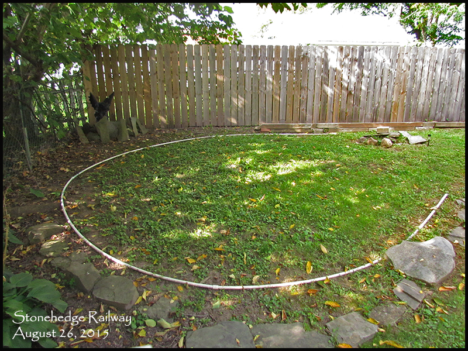 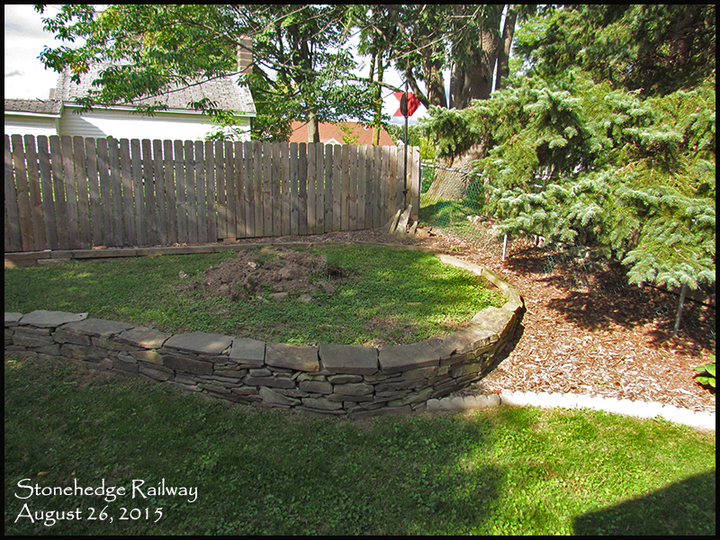 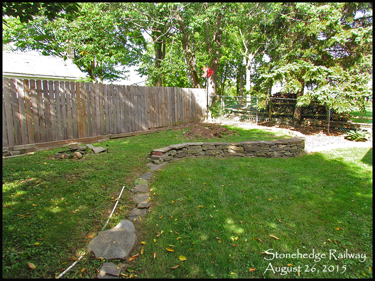 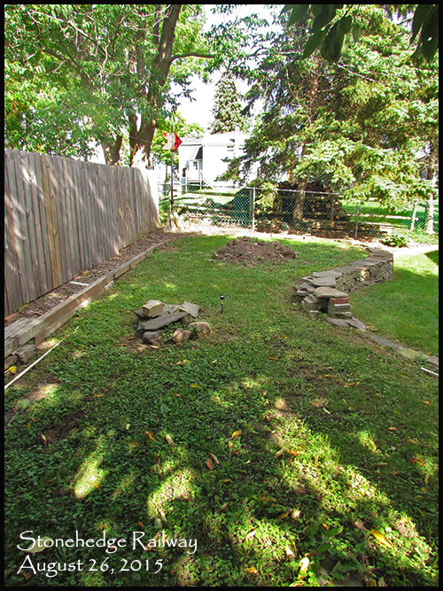 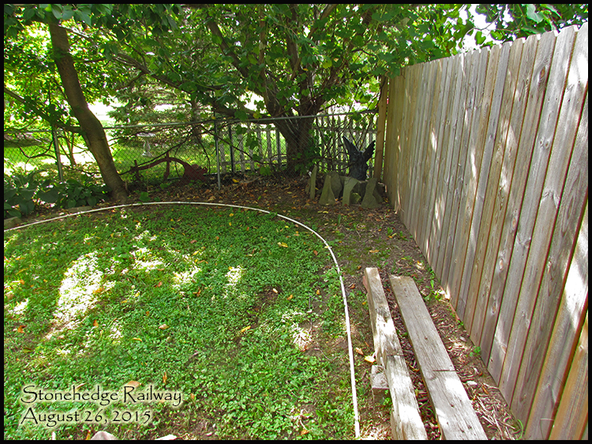 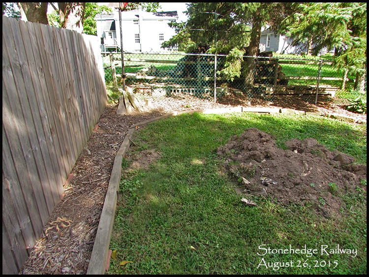 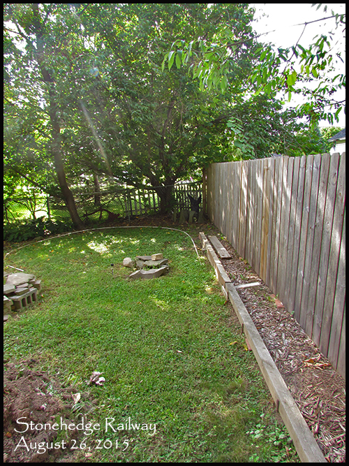 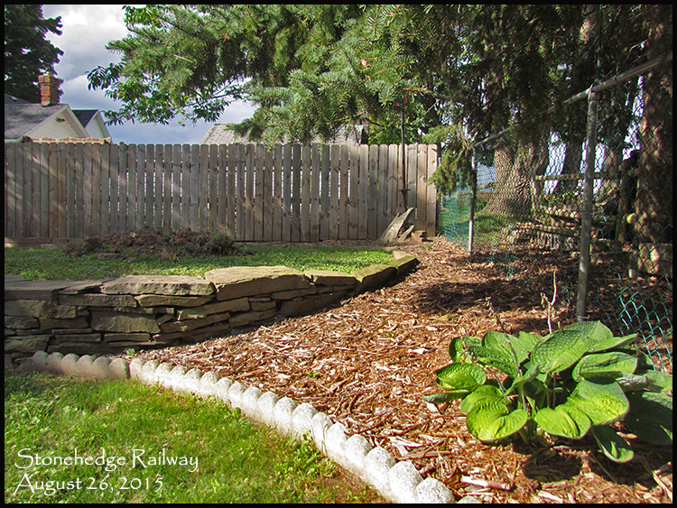 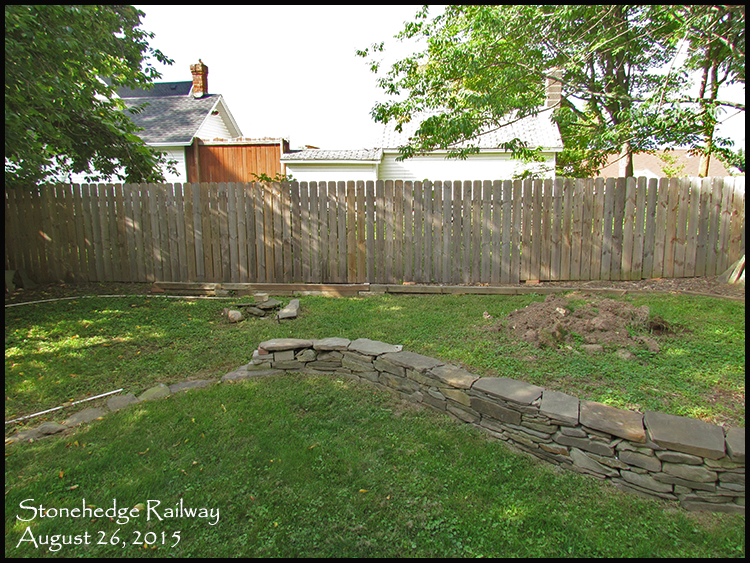 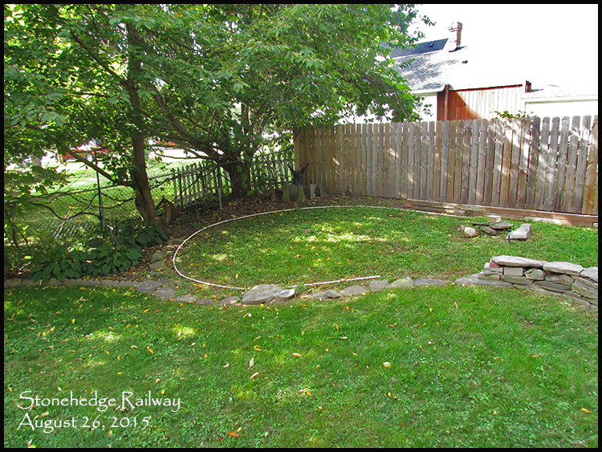 August 29, 2015: Video 11 - Deciding on placement for the right-side upper loop. September 20, 2015: Building the left-side retaining wall, also known as "The West edge of the World" Video 12: 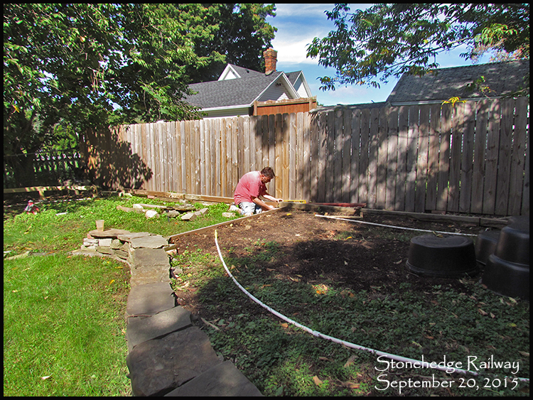 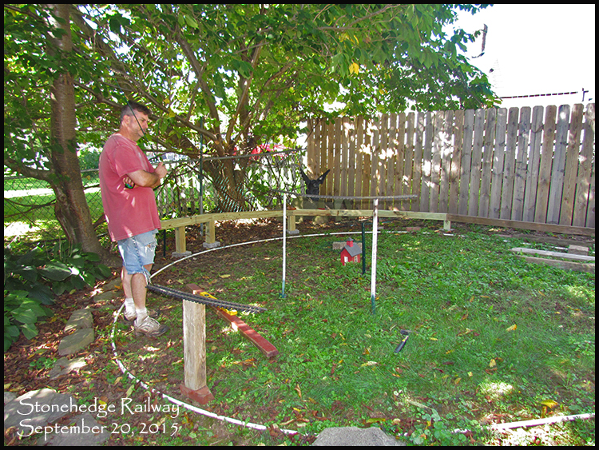 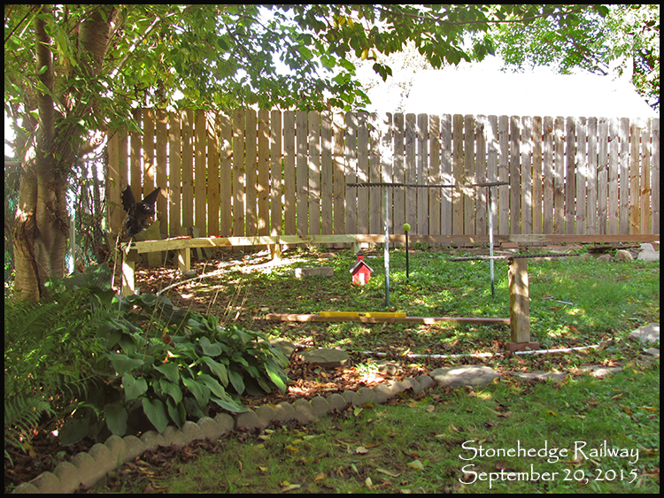 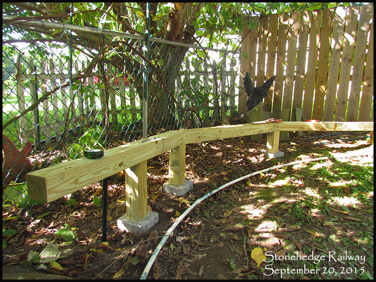 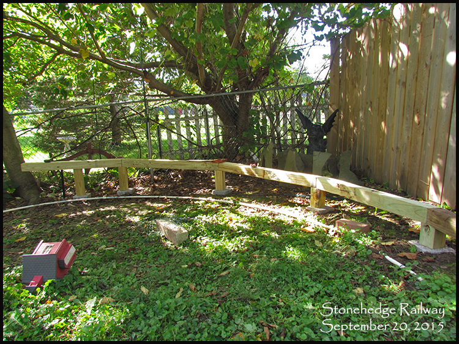 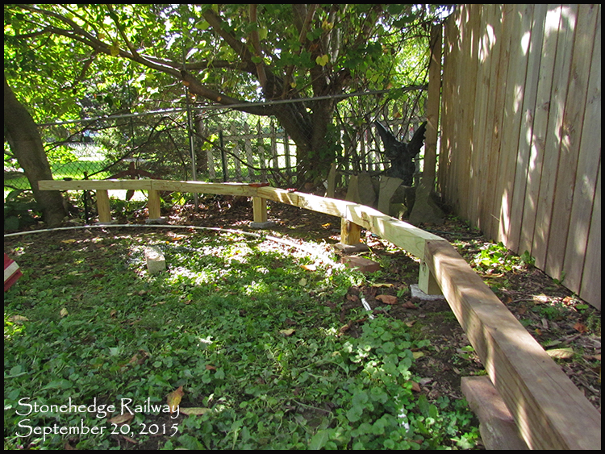 September 26 & 27, 2015: Bringing in more dirt! We decided to dismantle one of the garden beds in the front yard, and return most of it to lawn. This freed up a good dirt supply that could be moved over to the Garden Railroad. I started digging out the dirt manually with a shovel, and loading into the dump cart to haul with my 1964 Wheel Horse: Video 13: 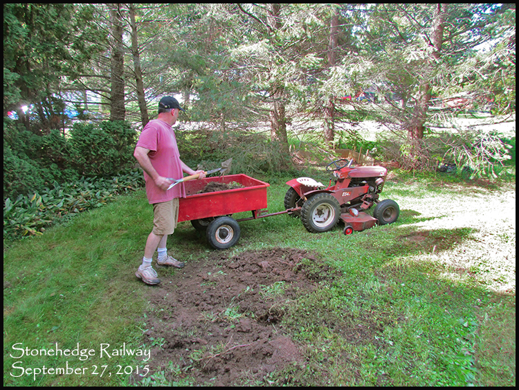 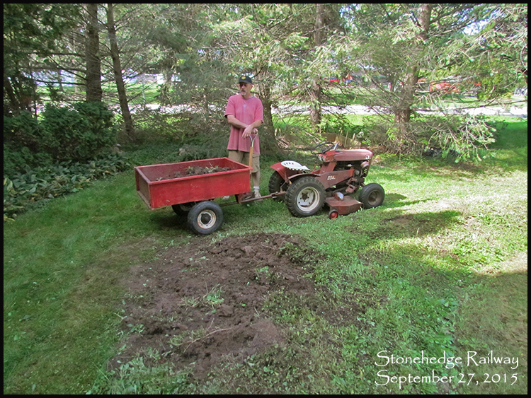 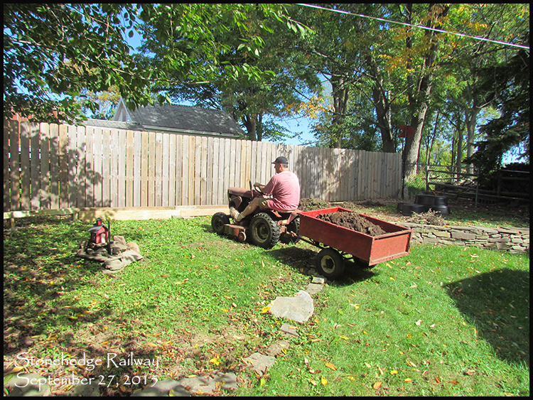 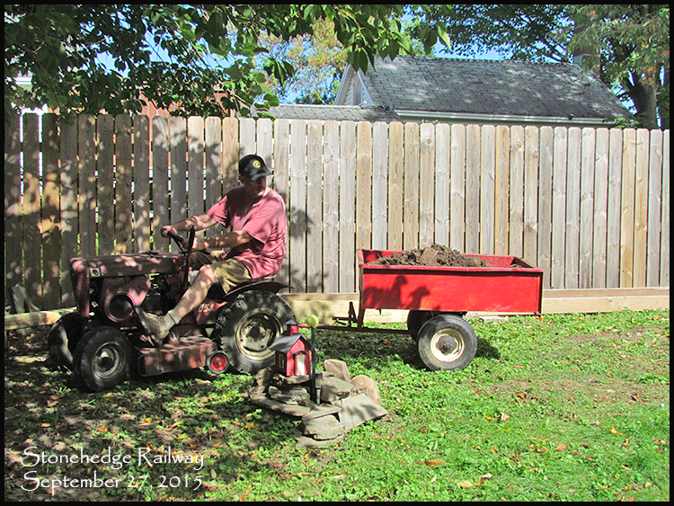 November 1, 2015 Video 14, End of the 2015 season: Some sad news from 2015. We had to say goodbye to Boots :( 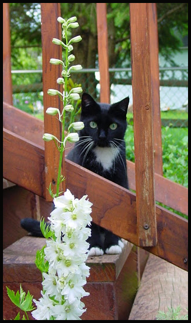 she got sick in the spring, and after a bunch of tests, it was determined that her time was up.. she went away to the Rainbow Bridge... farewell Miss Boots, until we see you again someday. Continue to 2016 |
||
 |